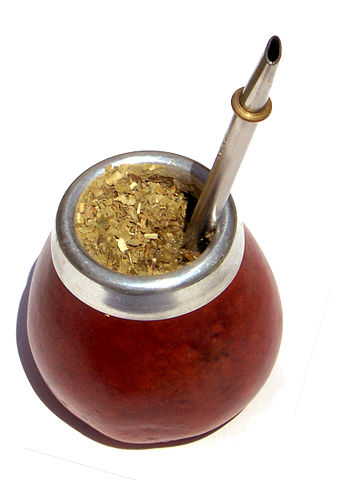

Cultura de Argentina: tradiciones,costumbres, gastronomía, música.
Argentina es una nación de gente sociable, que le da importancia al trabajo, pero también al esparcimiento, con una gran pasión por el fútbol y muy orgullosos de elementos tan distintivos del país como sus cortes de carne, los gauchos, el tango y el mate.
Conformación política
Argentina es un Estado federal descentralizado, conformado por 23 provincias y la Ciudad Autónoma de Buenos Aires, como su capital. Posee un sistema democrático que elige cada cuatro años a su presidente, quien puede optar por una reelección al término de su mandato.
Origen del nombre de la nación
El nombre Argentina proviene del latín argentum que significa plata. Para 1554 ya aparecía el término en los mapas del portugués Lopo Homem, quien identificaba a la región con el nombre terra argentea.
Historiadores señalan que la idea de vincular a Argentina con la plata proviene de la presencia de yacimientos de este metal en la región para el momento en el que los exploradores europeos arribaron a estas tierras en 1516.
Costumbres
El mate
El consumo de mate, una infusión de origen guaraní que se prepara con las hojas de la hierba mate, no es solo una bebida típica sino el vínculo social que une a los argentinos.
No existe hora para consumirlo, ya que se toma a lo largo de todo el día. Es una costumbre familiar que se hereda y que es usada por los argentinos al momento de socializar, al punto de llevarlo a todas partes en termos para tenerlo siempre cerca.

El asado
Para los argentinos es usual compartir todas las semanas con familiares y amigos de sus asados, que es como llaman a la tradicional carne a la parrilla. Esta la degustan de diferentes maneras, mientras discuten sobre política, fútbol o la situación económica del país.
La cercanía
Los argentinos son personas muy afectuosas, que usualmente plantan un beso al conocerse o saludarse. Incluso los hombres que se tienen mucha confianza también podrían saludarse de beso.
Algunos extranjeros se quejan de que los argentinos invaden el espacio personal al acercarse demasiado al momento de entablar una conversación, pero aunque esto incomode a algunos, solo se trata de la forma que utilizan para expresarse y hacer sentir su opinión con más fuerza.
Los gestos
Argentina es uno de los países en los que más se gesticula. Cuando el argentino habla lo hace con todo el cuerpo, imprimiendo en su lenguaje corporal el mensaje que desea enviar, lleno de la pasión y la intensidad que lo caracteriza.
El voseo argentino
La manera de hablar de los argentinos se diferencia en gran medida a los demás países latinoamericanos debido al uso del voseo o sustitución del «tú» por el «vos» para comunicarse, empleando además más de cinco mil términos y expresiones propias que solo pueden ser entendidas por quienes conviven en el país.
El voseo casi ha sustituido al «tú» o el «usted», pero solo se utiliza en situaciones de confianza entre los interlocutores.
Tradiciones
El fútbol
Es indudable que el deporte más popular en Argentina es el fútbol, una disciplina que hasta el día de hoy ha llenado de orgullo a millones de fanáticos argentinos.
Dicen que en Argentina el fútbol no es un deporte, sino una religión, que se practica desde que los niños son muy pequeños, tanto en terrenos improvisados en la calle como en las canchas más completas del país.
Y es que nombres como Diego Armando Maradona (1960) o Lionel Messi (1987) son motivo de orgullo nacional, cuyos logros los han convertido en héroes de varias generaciones; pero contrario a lo que muchos podrían pensar, el fútbol no es de manera oficial el deporte nacional.
El Pato
Realmente el deporte nacional es el pato, una disciplina ecuestre conformada por dos equipos de cuatro jinetes que intentan apoderarse del pato, una pelota con seis asas, que deben pasar por un aro para obtener puntos.
Es una disciplina deportiva con más de cuatrocientos años de historia, ya que los gauchos (habitante de las llanuras argentinas) lo practicaban durante la época colonial.
Historiadores afirman que se llama así porque antiguamente mataban un ave, usualmente un pato, que colocaban en una pieza de cuero para usarla como pelota.
Con el paso del tiempo su reglamento ha sufrido modificaciones como la sustitución de un ave por una pelota, el uso de uniforme y la inclusión de reglas que garanticen la seguridad de los jugadores.
Gastronomia
La gastronomía argentina es una combinación de la cocina criolla, española e italiana, cuya fusión ha permitido la creación de platos muy populares. Es especialmente famosa por sus cortes de carne, respaldada por una amplia tradición ganadera que se ha convertido en un elemento distintivo del país.

Los Vinos Argentinos

Y no podemos hablar de gastronomía sin mencionar los vinos argentinos que se producen en una docena de provincias de todo el país y el cual ha sido distinguido como un alimento más de la dieta argentina.
La pasión por este producto es tan intensa que, en 2010, el vino fue declarado bebida nacional de Argentina, por decreto presidencial.
Musica:El Tango

Tal vez los jóvenes no escuchan el tango como lo hacían sus antepasados, pero el baile que transforma los sonidos en elegantes y sensuales movimientos es la máxima representación de la imagen argentina que cuenta además con un gran atractivo turístico.
El tango nació en Buenos Aires a finales del siglo XIX y, desde entonces, su fama solo creció hasta convertirse en uno de los elementos que distinguen al país. Historiadores afirman que primero nació la danza y luego el género musical, el cual creció alrededor de ese movimiento.
El máximo exponente del tango como género musical fue sin duda Carlos Gardel (1890-1935) que, a más de 80 años de su muerte, aún sigue siendo considerado el rostro del tango.
En 2009, la Organización Cultural de las Naciones Unidas (UNESCO) declaró al tango Patrimonio Cultural Intangible de la Humanidad. Aseguran que este baile seductor debe ser salvaguardado, ya que personifica y alienta tanto la diversidad cultural como el diálogo.
La Religion En Argentina
Argentina establece en su constitución la libertad de culto, sin embargo, existe una gran tradición católica. De hecho, el actual Papa es el argentino Jorge Bergoglio, quien adoptó el nombre de Francisco, tras ser elegido en 2013 como líder de la Iglesia católica.
Existen además en Argentina otras vertientes del cristianismo como las iglesias protestantes; los Testigos de Jehová y una importante presencia de judaísmo, islamismo y budismo, entre otras creencias.
Otros detalles de Argentina
La pampa argentina o región pampeana es una llanura en la que desarrolla la principal actividad ganadera y agrícola del país. Es tan extensa que abarca 1.200.000 km a través de seis provincias del centro-oeste del país. En la pampa argentina vive un grupo de menonitas que no reconocen autoridad externa y solo emplean recursos tradicionales, rechazando cualquier artilugio moderno.